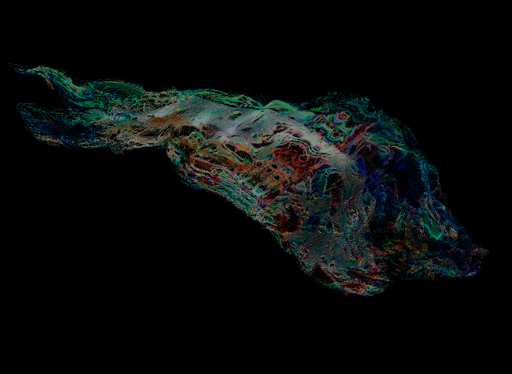

INGEST
Every sensation enters the self.

ECDYSIS imagines a society where streams of information, experiences and personal history accumulate as cognitive layers. When memory becomes unbearable, citizens can voluntarily shed selected layers through a process called MOLT.
What is removed never simply vanishes. It leaves a TRACE, while Continuity ID preserves the rights and legal identity of the person who chose to change. A new self is not necessarily a better one—just another possible one.
Every sensation enters the self.
Memory changes the shape of identity.
One layer is voluntarily relinquished.
The past persists as another form.
Personal identity survives the transformation of memory. MOLT must remain voluntary, memory must remain private, and traces of lost experiences cannot become instruments of coercion.
MEMORY IS PRIVATE. / MOLT IS VOLUNTARY. / SHED BECOMES TRACE.Shedding is not disappearance.
Shape, deform and recolour what remains.
Attach cocoon1–3.png and cocoon1–3.obj to the assets folder. The image wraps around its corresponding 3D form.
OBJ UV COORDINATES ARE USED WHEN AVAILABLE. WITHOUT UVS, AUTOMATIC PLANAR PROJECTION IS APPLIED. MISSING OBJ FILES USE THE HEIGHT-FIELD FALLBACK.